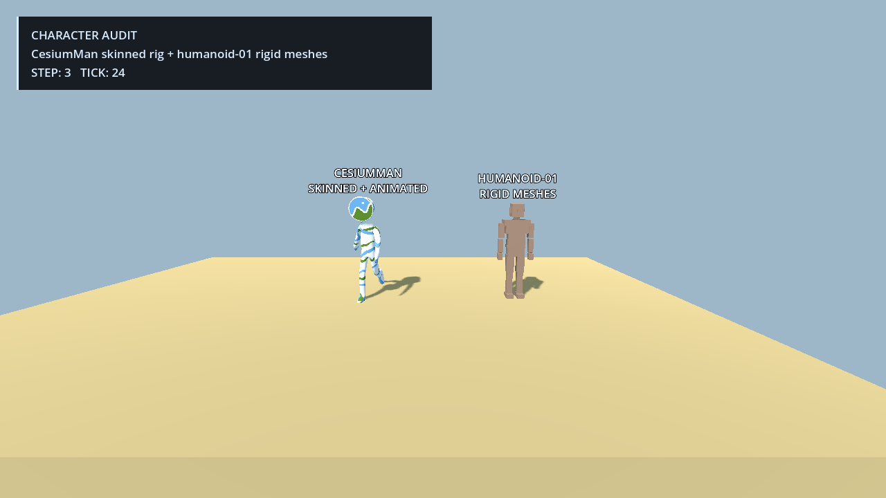
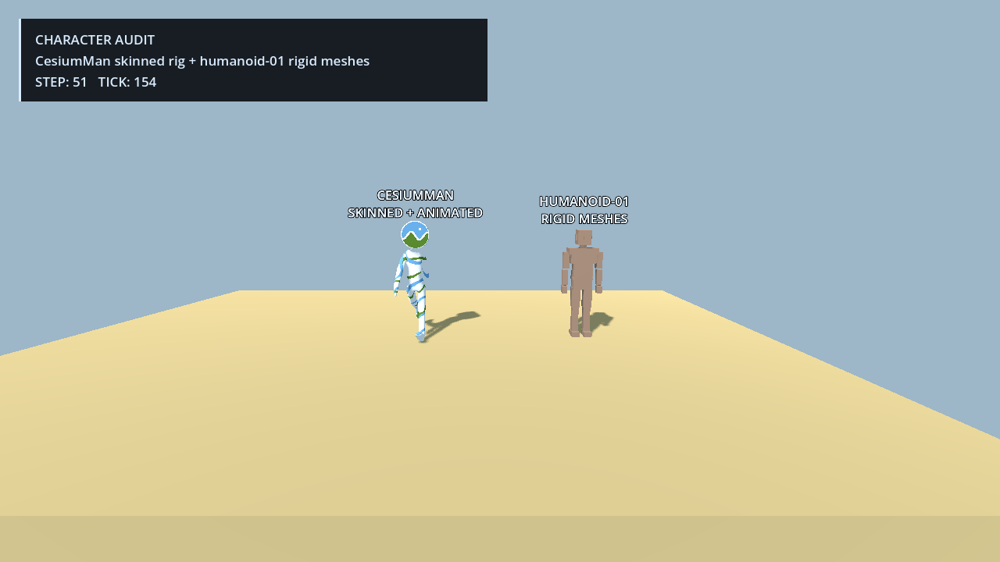
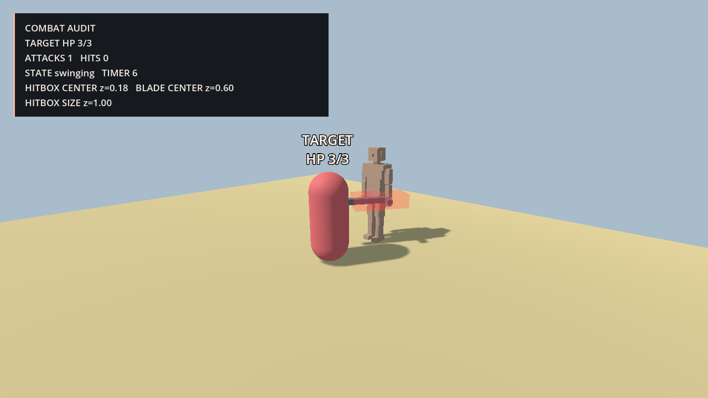
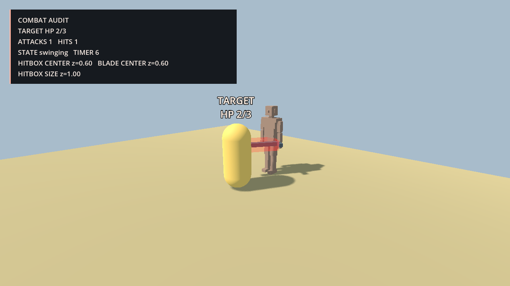

Character & combat evidence audit
What Godot and the harness can actually observe, what the existing humanoid contains, one combat defect diagnosed from evidence and repaired with the same test before and after, and the gaps that remain.
branch
experiment/phase11-auditStage progression
Measured now
Stage B · what the character actually is
The repository humanoid is a rigid hierarchy of 22 meshes with zero skins, zero bones, and zero animation clips. To test real skeleton observation without inventing a rig, the fixture also loads the existing CC-BY-4.0 CesiumMan.glb glTF sample. It is test evidence only, not a new project character.






Stage C · one controlled combat defect, diagnosed from evidence
A one-line defect was injected into a copy of a small combat fixture that reuses the repository humanoid, a real StaticBody3D target and an Area3D weapon hitbox. Diagnosis used only the captured event stream and screenshots; the repair restored a single constant; the byte-identical test (sha256 93cbb7d5…) was re-run on the same copy.




HITBOX_CENTER_LOCAL z 0.60 → 0.18docs/phase11/stage-c/repair.diffArea3D with monitorable = false reports its own get_overlapping_bodies() as empty — the collider was present, the query was suppressed. That is why the recommended next task is a physics-space query.collision_layer/collision_mask, which it could not rule out from the evidence.Stage A · verified surface
- Verified runtime: scene tree, property reads, structured node/skeleton/animation observation, fixed-physics timeline, windowed frame capture.
- Native but not exposed:
AnimationTreestate, direct physics-space queries, debug collision overlay control, native input event injection, MovieWriter recording. - Event limits: collision/event history is fixture-recorded, not a generic engine event bus.
Stage D · gaps and the next task
Gaps are separated into missing project data (no rigged humanoid, no clips, no bone mapping, no enemy), unsupported harness surface (physics-space queries, generic collision events, AnimationTree state, native input injection, debug overlay, video, property writes) and unproven (multi-character scenes, skinned-bone weapon attachment, cross-machine determinism).
PhysicsDirectSpaceState3D query operation (intersect_shape / intersect_ray) to the existing bridge and controller contract. It is the gap that actually blocked Stage C's diagnosis, needs no rig, and is bounded to one bridge action, one controller method, one test.Guardrails
No Phase 11 merge or push. Phase 8–10 fixtures and evidence stay untouched (git status in the Phase 11 worktree shows only new, untracked Phase 11 paths). Work is isolated in ai-native-engine-phase11 on experiment/phase11-audit, baseline e72ba64. Stage C created no character intelligence and no general combat framework, and Stage D recommends a measurement task only.